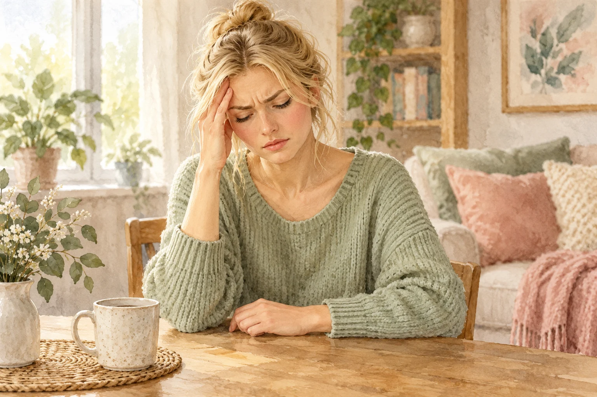

Presentation
«I've got two dogs and a horse!»
Лиза рассказывает о своих животных. По-русски мы говорим «у меня есть», а по-английски — I have или I've got. Смысл одинаковый, разница в грамматике вопросов и отрицаний.
haveI have two dogs.
have gotI've got two dogs.

ANNA
Do you have a car?
No, I don't. But I've got a bike.
Has your sister got a car?
Yes, she has. She's got a red car.

JAMES

I've got a headache.
Утверждение
| I / we / you / they | have | = have got ('ve got) |
| he / she / it | has | = has got ('s got) |
| She has blue eyes. = She's got blue eyes. | ||
Отрицание
| I / we / you / they | don't have | = haven't got |
| he / she / it | doesn't have | = hasn't got |
| He doesn't have a job. = He hasn't got a job. | ||
Вопросы и краткие ответы
| Do you have a pen? | — | Yes, I do. / No, I don't. |
| Have you got a pen? | — | Yes, I have. / No, I haven't. |
| Does she have a cat? | — | Yes, she does. |
| Has she got a cat? | — | Yes, she has. |
Вопросы с wh-
| How many cats | do you have? | = have you got? |
| What kind of car | does he have? | = has he got? |
Полезно: got нужен только в значении «иметь». В выражениях have breakfast, have lunch, have a shower got не ставят: «I have breakfast at eight», а не «I've got breakfast».
Частая ошибка: «Do you have got a car?» — неправильно: либо «Do you have a car?», либо «Have you got a car?». И после doesn't — have без -s: «She doesn't has» → «She doesn't have».